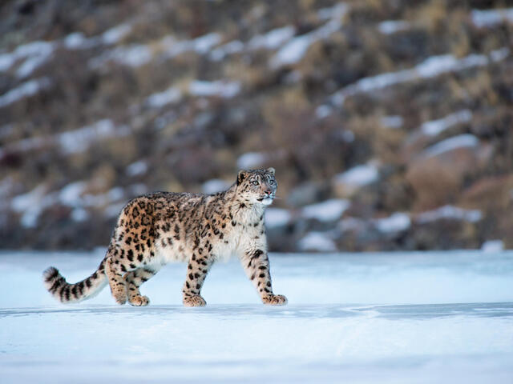
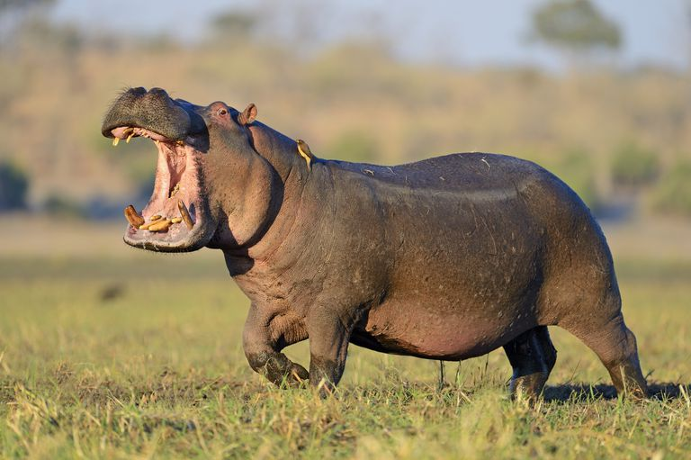
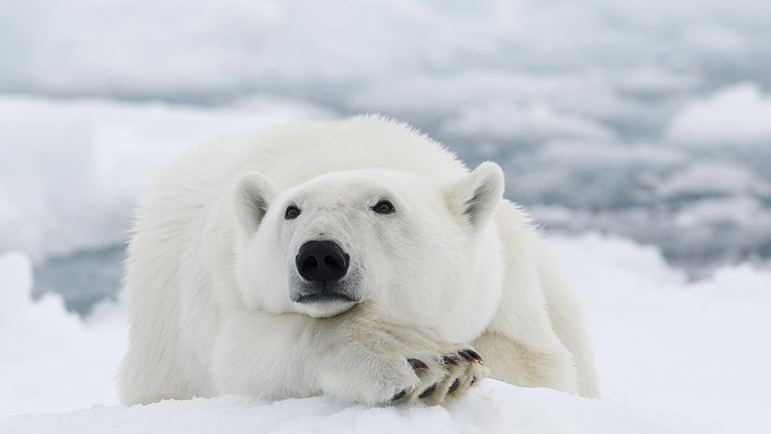

Contenido
Se escogió el tema ya que al observar el comportamiento de mis mascotas respecto al frio que hace actualmente en Ecuador, que es un clima al cual no se está acostumbrado habitualmente en la región costa, lo que llevo a pensar como afecta al cambio climático a las plantas y a los animales.
Diferencia entre calentamiento global y cambio climático.
Habitualmente entre la mayoría de las personas se piensa que cambio climático y calentamiento global tienen el mismo significado, están relacionados, pero no tienen el mismo concepto. Una forma de formas de diferenciarlos es que el calentamiento global se refiere a la temperatura que hay en la superficie de la tierra, y en el caso del cambio climático se incluyen los efectos secundarios del calentamiento, esta problemática es causada por nosotros los seres humanos y las consecuencias a través de esto son tormentas, sequias y derretimiento de glaciares que afectan más a otros seres vivos que a los humanos.
Como afecta el cambio climático a seres humanos
El cambio climático es un contra la salud de las personas por impactos directos (tormentas, sequias y aumento de nivel del mar) e impactos indirectos (enfermedades, desnutrición y desplazamientos), normalmente se piensa que el cambio climático será un problema para futuras generaciones, pero esto ya esta sucediendo en la actualidad. Se registran temperaturas medias más altas en cada año que pasa y se ven mas personas afectadas por desastres y enfermedades.
Como afecta el cambio climático a los animales
En la actualidad los veranos duran 5 semanas mas que en el pasado, y como nosotros notamos ese cambio, los animales no les pasa desapercibido este cambio. Cada especie tiene una temperatura en las que se siente más a gusto, pero el cambio climático altera su ambiente.
“El cambio climático está llevando a muchas especies al límite. Les falta agua para beber o sufren temperaturas en las que no están cómodos”, explica David Vieites, director del Departamento de Biogeografía y Cambio Global.Los animales no cuentan con aire acondicionado o calefacción lo que lleva a 3 únicas soluciones Adaptarse, marcharse o lastimosamente perecer.
Algunas especies de animales amenazadas por el cambio climático
1. Tortuga laúd

Se encuentra en el océano atlántico, indico y pacífico, es la especie más grandes de las tortugas e, igual que la mayoría de las especies de tortugas, están en peligro de extinción.
El cambio climático es uno de sus factores de riesgo ya que afecta a su reproducción y a la composición de sus poblaciones. La reproducción de una tortuga marina se hace en la arena de la playa, pero tiene que ver también la temperatura de la arena. El calor hace que nazcan mas tortugas hembra y también puede llevar a que los huevos no eclosionen. Y también otro de los factores es el aumento del nivel del mar y las tormentas, estos arrasan los nidos de tortugas.
2. Pingüino Emperador

El pingüino emperador necesita un hielo estable duran por lo menos 9 meses del año como plataforma para que se apareen, incubar guevos, cuidar a sus crías y remplazar sus plumas durante su muda de plumaje. También ellos necesitan que haya huecos en el hielo marino para que se puedan alimentar.
Esta especie el vulnerable a cualquier cambio del hielo. Si la capa de hielo se vuelve muy extensa, los adultos deben viajar largas distancias para llegar al mar abierto, lo que hace que gasten sus energías y afectan a su reproducción. Por el contrario, si el hielo empieza a escasear por que se forma muy tarde en agosto o se deshace muy temprano en primavera, los polluelos no alcanzan a desarrollar el plumaje impermeable que necesitan para sobrevivir en el frio.
3. Leopardo de las nieves

Están totalmente adaptados al frio, los leopardos de las nieves son de montañas altas del centro y sur de Asia desde hace millones de años, pero actualmente se estima que quedan entre 4.000 individuos. Uno de los factores que los lleva a estar en peligro es el cambio climático por que se esta alterando el clima de las montañas donde habitan.
Es probable que para el 2070 sus hábitats se reducirán un 23%, y con el aumento de temperatura, es probable que los bosques se expandan a costas de las praderas donde habitan, donde aumentarán los depredadores. Lo que resulta en competencia por alimentos, lo cual afectaría a su supervivencia.
4. Hipopótamo

Viven en muchas parted de africa subsahariana, sin embargo, en las últimas décadas sus poblaciones han ido disminuyendo por diversas causas como la caza, destrucción de hábitats y cambio climático. El aumento de temperaturas, periodos de sequia prolongados y precipitaciones irregulares donde hay escases de agua de lo que dependen los hipopótamos. Como estos animales son acuáticos, no se adaptan a las altas temperaturas fueras del agua, lo que lo vulnerable a las sequias que provocan deshidratación y puede llegar a su muerte.
5. Oso polar

Algunos científicos estiman que su extinción es algo inevitable y que ocurrirá en los próximos años, así lo recoge el portal muyinteresante.com.
El principal factor por lo que esta en peligro de extinción es el deshielo del ártico que es sus habitad, su principal alimento son las focas que evitan las regiones calientes del Ártico, lo que ocasiona una desnutrición para ellos. En casos extremos recorres muchos kilómetros durante meses y no encuentran comida y terminan falleciendo.
Conclusión
Los humanos son la principal causa del cambio climático una evidencia de esto es que los deshielo comenzaron en 1800 donde coincide con la revolución industrial, y los animales y plantas son los mas afectados por esto, donde los animales que no se adaptan a este cambio por diferentes razones, lo que los lleva a estar al límite de su supervivencia.